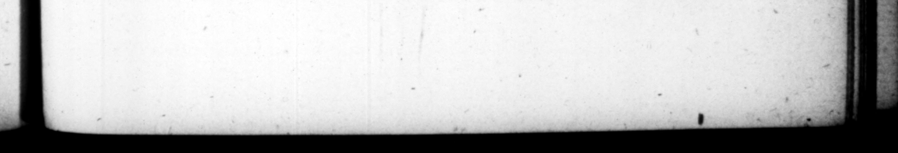

D. OC TA. AUGUST. ante domum ſuam pal tranſb lanted 4 1 2 | _ * E i the a vers — mam in compluvium deorum Penatium tranſtulit : utque * * S049 houſe, into 4 court e hy, 2e/hold coaleſreret, magnopere cura - gods were placed, and te vit. Apud infulam Capreas, care to have it thrive, Aud when in yeterrims il icis demiſſos jam the iſte of , Capree, ſome decayed boughs ad terram langnenteſque ra- ff an old oak, that hung drioping to the mos convaluiſle adventu ſuo, Freund, recovered mnt ves. upon his adeo lætatus eſt, ut eas cum arrival there, he mas ſo rejayced «t-ity republica Neapolltanorum .. made mutaverit, Anaria data. {ervabat X. 8 ant poſtridie nundinas. oquam proficiſcerecur : aut No. 7 uam rei ſeriæ inchonis quid [ idem atret: nihil in hoc u aliud devitans, ut ad Tiberium ſcribit, quam Joan as nominis. 93. Peregrinarum ceremoniarum, ſicut vetercs ac præceptas reveientiſſime coluir, Ita cœteras contemptui habuit. Namque Athenis initiatus, cum poſtea 8 nali de privilegio ſacerdotum AtticeCereriscognoſceret, & quedam ſecretiora proerentur, dimiſly conſilio corona circumſtantium, fo- lus audiit diſceptantes. Ac contra non modo in randa Ægypto paullum deA 3 Apin ſu ectere paſedit. : ſed & Cajum nepotem, quod Judzam prætervehens, apud Hieroſolymam non ſupplicaſſet collaudavit. 94. Et quoniam a yon eſt, non ab re fuerit ſtexere ei, prius quam * ipſo natali die, ac deiaceps evenerint, quibus ſutura magnitudo ejus, & pexpetua felicitas ſperari animadvertique poſſet. Velitris antiquitus tacta de cælo parte muri, reſpouſum eſt ejus oppidi civem quandoue rerum potiturum : qua tiducia Velitrini, & tunc ſtatim & poſtea 2 ad exitium ſui cum populo Romano belligeraverant. Sero tandem documentis apparuit, that he an exch with the ga b- verument of Naples of the of dies quoſdam, ne 0 wiſe obſerved certain days, as never to Lo. any whither the day after the NunRome pro tribu - * Pis , but he thewiſe commended his hoc . pius pæene Enaria, for that of Caprea, Er likedine, or to begin any thi ſeriqss buſineſs he the — — So 5 nothing elſe therein, as he writes to Tiberius, than the wnluckyneſs of the a. rn 93. As to the religious rites of foreign * * he was a ia pd of 2 as had been 9 by antient cuſtum, hut others he paid no regard to at all. For having been initiated at Athens, and being afterwards to hear 4 cauſe. at Nome, relating to the privileges of the prieſts of the Attick Ceres, when ſome 7 the myſteries of that worſbip were te Spoke to, be diſmiſſed the gentlemen the bench that ſat as judges with him, together with the. company of byſtanders, and beard the debate upon thoſe points, by bimſelf. But on the 0ther hand he not only declined in bis progreſs through Egypt, calling to eds fon Caius, for not paying his —— Feruſalem in his paſſage by Fudia. 94. And ſince we are got ubm this ſulject, it may not b improper to ſubj:in an account of the omens, before and at his birth, as well as wards, that gave hopes of bi ture grandure, and the cor fortune th at attended bim. A part of the town-wall at Velitre having in former times been ftiruck with thunder, the ſout hſayers gave their epi nion upon it, that a native of that place would ſome. time or other be mifter 07 the Roman ſlate z, whom _ which encouragement the Pelitrins both immediately, an as ſcryeral times after made war with the Roman peopic , till th:y brongbt themſelve: upen the © | oſtentum
